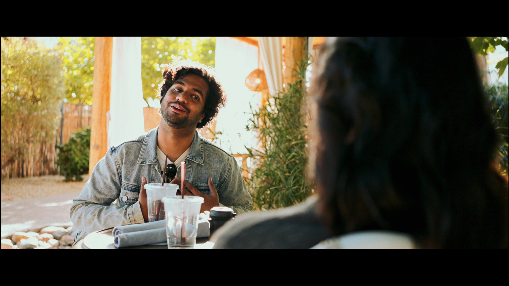
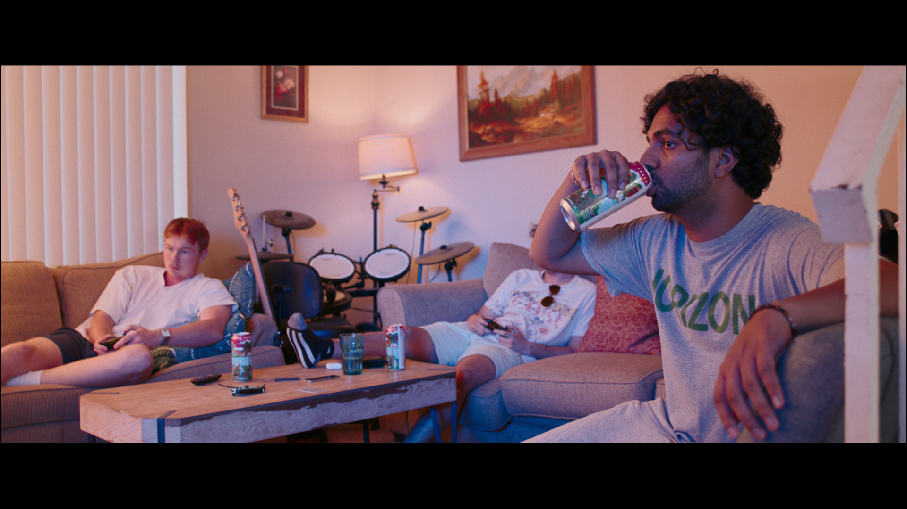
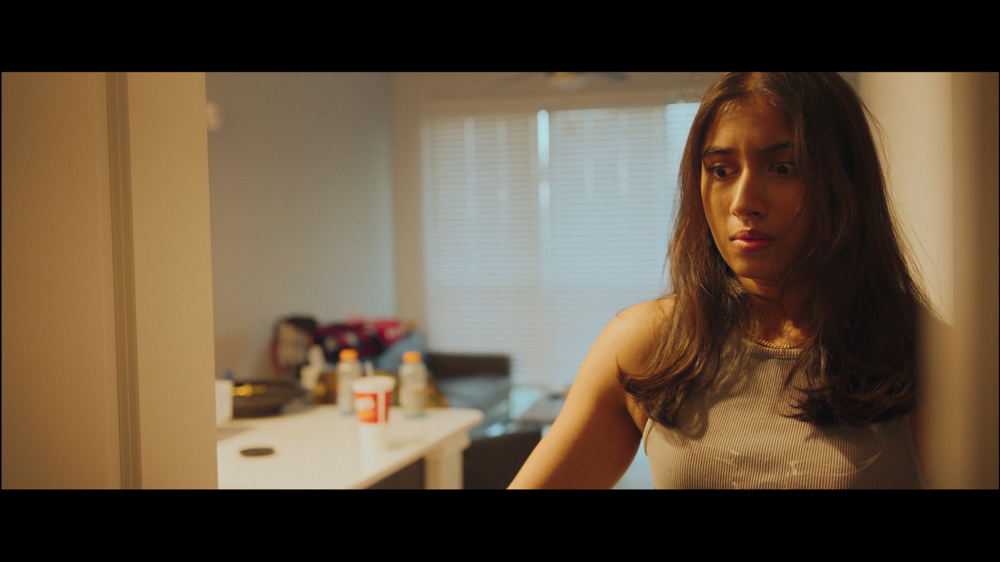

Something About Him
About
A narrative short film exploring themes of identity and connection through careful cinematography and visual storytelling techniques.
Role
Director of Photography
Equipment
- RED Komodo - A Cam
- Sony ZV-E1 - B Cam
- Nikkor AIS Primes
- Professional Lighting Kit
Focus
- Character-driven cinematography
- Emotional storytelling
- Visual mood and tone
- Lighting design
Stills


